캐릭터가 생존할 수 있는 총량입니다. 0이 되면 패배(사망 또는 행동불능)하게 됩니다.
전투나 활동의 원동력입니다. 과도하게 소모하여 0에 도달할 시 피로 상태가 되어 행동에 제약이 생깁니다.
물리적인 힘. 근접 공격력, 무거운 물건 들기, 문 부수기, 운동 능력 등 말 그대로 근력 관련 능력치입니다.
식중독 같은 외부 질병 요소에 버틸 수 있고 체력, 스테미나를 담당하는 스탯입니다. (스탯 당 체력, 스테미나 5씩 증가)
회피같은 기동성과 관련된 스탯입니다. 배틀에서 턴 순서에 영향을 미칩니다.
명중 관련 능력치입니다. 활동, 전투 시에는 높을 수록 원거리에 관련된 상황에 이점을 가집니다.
마법적 힘, 마법 공격력 등 마법 관련 능력치입니다. 스탯 5당 사용할 수 있는 주문 횟수가 1 추가됩니다.
통찰력과 직관. 주변 살피기(지각), 상대방 의도 파악, 정신적 내성과 연관된 스탯입니다.
카리스마, 존재감, 설득 등으로 직접적 전투가 아닌 간접적으로 타인에게 영향력을 줄 수 있는 스탯입니다.
이벤트 종료 후 성장 정산으로 등장하는 카드입니다. 성공과 실패 모두 보상이 발생하지만 카드 후보의 성격이 달라집니다.
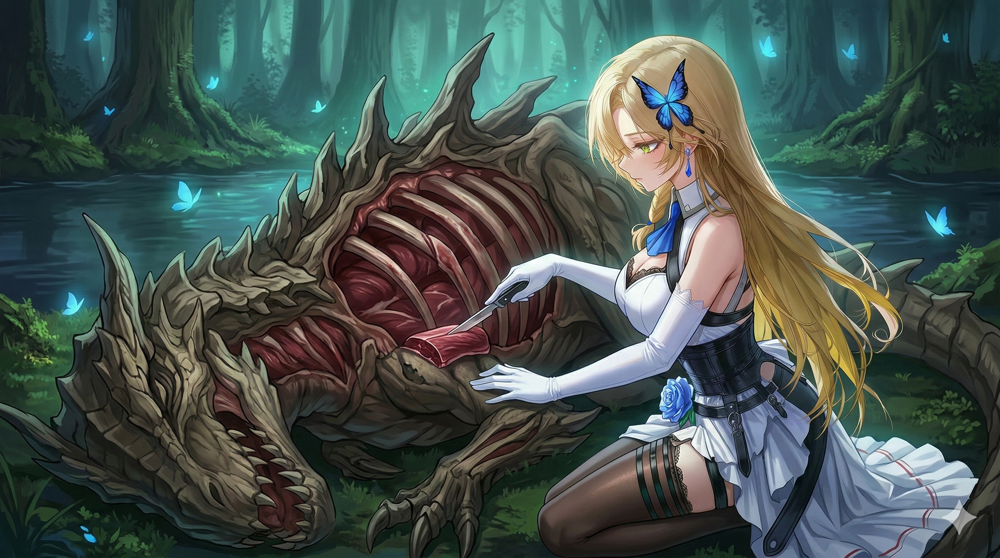
쓰러뜨린 적이나 시체에서 전리품을 회수하는 행동입니다. 정밀 판정과 도감 확률을 비교합니다.
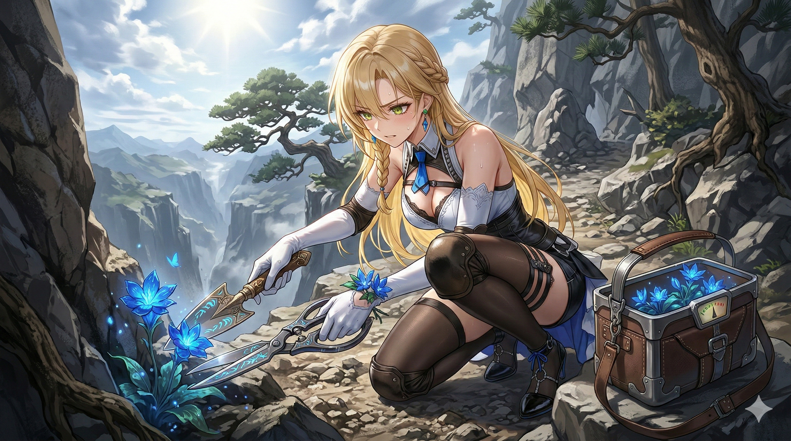
자연환경 속에서 자원을 거두어들이는 행동입니다. 건강 판정과 환경 보정의 영향을 받습니다.
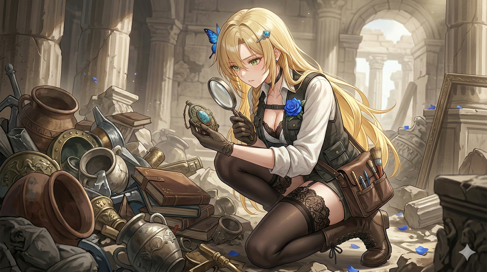
버려진 장소에서 가치 있는 고대 유물을 찾아내는 활동입니다. 지능 판정에 영향을 받습니다.
보상 카드는 이벤트 종료 후 지급되는 성장 정산 카드입니다. 이벤트가 성공했든 실패했든 정산 보상은 발생하며, 사건에서 캐릭터가 얻은 경험을 성장 선택지로 변환합니다.
보상 카드는 캐릭터가 사건을 통해 얻은 경험을 성장 요소로 변환합니다. 성장 요소는 카드 후보에 반영되며, 이벤트의 성격과 캐릭터가 실제로 사용한 행동을 기준으로 구성됩니다.
카드 후보에는 다음 성장 요소가 등장합니다. 성공한 이벤트에서는 안정적인 후보가 중심이 되고, 실패한 이벤트에서는 불리하거나 왜곡된 성격의 카드가 함께 섞일 수 있습니다.
주능력치 숙련도는 즉시 1씩 증가하지 않습니다. 현재 유저의 해당 능력치 최대값을 a, 최대값에서 굴린 값을 b라고 할 때 숙련도는 (b / a x 100)%만큼 증가합니다.
이벤트에서 얻은 경험을 바탕으로 새로운 행동 방식이나 기술을 획득하는 후보입니다.
이미 보유한 스킬의 효과, 판정 방식, 사용 조건 등을 강화하는 후보입니다.
루팅은 쓰러뜨린 적, 시체, 상자, 잔해 등에서 전리품을 회수하는 행동입니다. 루팅 시 유저는 정밀 주사위를 굴리고, 결과값을 도감에 등록된 전리품 확률과 비교합니다.
현재 유저의 정밀 최대값을 a, 최대값에서 굴린 값을 b, 도감에 나오는 전리품 확률을 c라고 합니다. 루팅 결과값은 (b / a x 100)%로 계산합니다.
(b / a x 100)%로 나온 값이 c 이하라면, 해당 확률 이하의 전리품들을 모두 획득합니다. 즉, 정밀 판정 결과로 도감의 전리품 확률 구간을 통과한 항목들이 루팅 결과가 됩니다.
루팅 결과물은 도감의 전리품 목록 확률에 따라 적용합니다. 적의 전리품 후보와 확률은 적 도감에서 확인합니다.
채집은 숲, 늪, 산, 동굴, 초원 같은 자연 환경에서 자원을 확보하는 행동입니다. 유저는 환경을 버티며 자원을 찾아야 하므로 기본 판정은 건강을 사용합니다.
현재 유저의 건강 최대값을 a, 최대값에서 굴린 값을 b, 지역별 채집 자원 확률을 c라고 합니다. 채집 결과값은 (b / a x 100)%로 계산합니다.
(b / a x 100)%로 나온 값이 c 이하라면, 해당 확률 이하의 채집 자원들을 모두 획득합니다.
채집 결과물과 계절별 자원 목록은 별도 도감에 등록된 정보를 기준으로 적용합니다.
채집은 날씨의 영향을 크게 받습니다. 비, 눈, 강풍, 안개, 폭염, 한파 같은 환경은 채집 난이도와 위험도를 변화시킵니다. 나쁜 날씨는 판정에 불리하게 작용하거나 위험 이벤트를 발생시킬 수 있고, 특정 날씨는 특수 자원의 등장 조건이 될 수 있습니다.
턴마다 힘 다이스를 굴려 물고기를 끌어올리는 생활 콘텐츠입니다.
재료와 조리 과정마다 지능 다이스를 굴려 요리 등급을 정하는 생활 콘텐츠입니다.
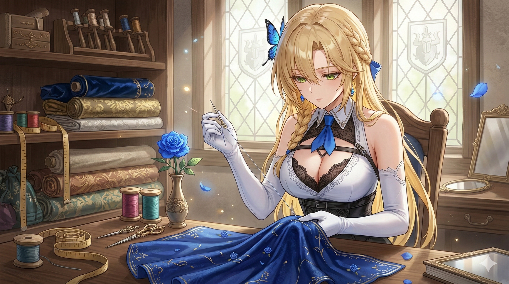
착용물을 제작, 수선, 개조하는 생활 콘텐츠입니다. 정밀 판정으로 품질과 기능을 결정합니다.
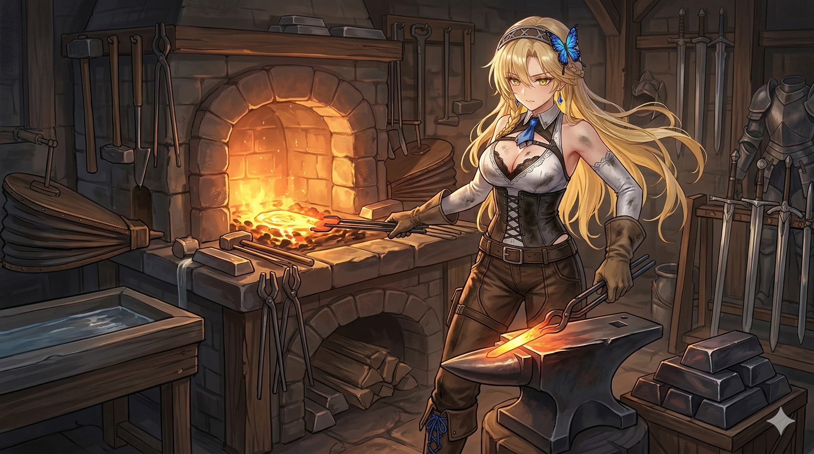
광석을 주괴로 만드는 제련과 주괴를 장비로 만드는 단조로 나뉘는 생활 콘텐츠입니다.
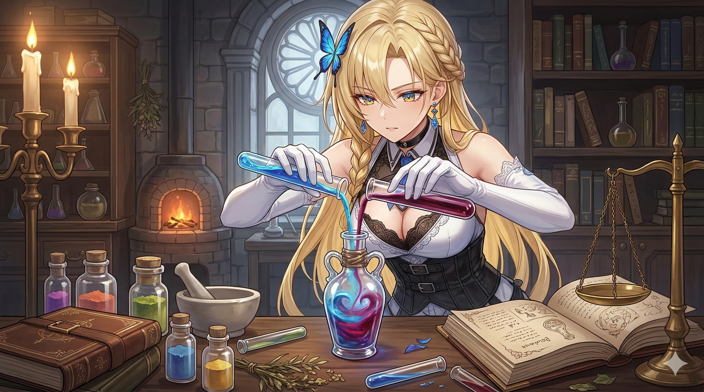
재료 비율로 효과를 정하고 지혜 판정으로 품질과 안정성을 다루는 생활 콘텐츠입니다.
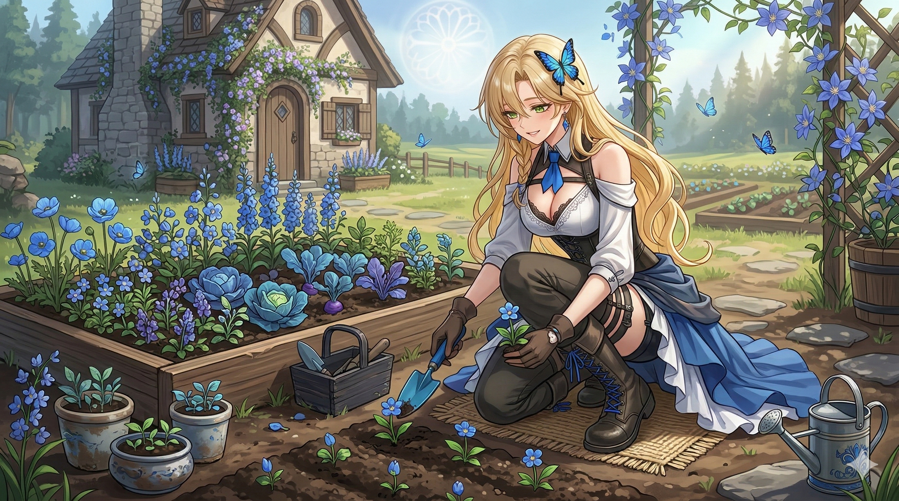
작물을 재배하고 건강 판정으로 수확물의 등급 비율을 결정하는 생활 콘텐츠입니다.
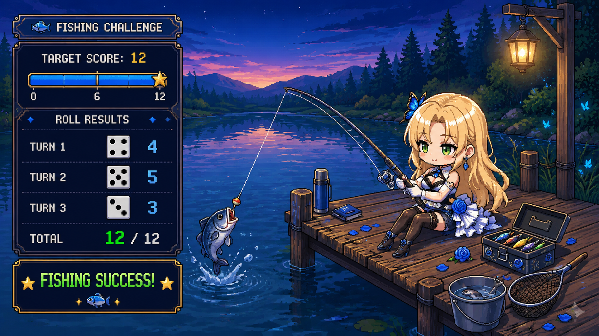
낚시는 정해진 턴 안에 물고기의 저항을 누르고 끌어올리는 생활 콘텐츠입니다. 낚시 중에는 매턴 힘 다이스를 굴리고, 누적된 힘 결과값으로 성공 여부를 판정합니다.
정해진 턴이 모두 지났을 때 힘 결과값 합계가 낚시 성공 필요 결과값 미만이면 낚시에 실패합니다. 실패한 물고기는 도망치거나, 미끼와 시간을 소모한 것으로 처리됩니다.
요리는 재료 선택과 조리 과정을 통해 음식의 완성도를 정하는 생활 콘텐츠입니다. 재료를 넣거나 끓이기, 졸이기, 볶기 같은 조리 행동을 할 때마다 지능 다이스를 굴립니다.
요리 등급은 지능 결과값의 평균으로 결정됩니다. 평균값이 높을수록 맛, 보존성, 회복량, 버프 효과가 좋아지며, 낮을수록 효과가 약해지거나 실패 요리가 될 수 있습니다.
재봉은 의복, 망토, 장갑, 천 장비, 가죽 보강품 같은 착용물을 제작하고 다듬는 생활 콘텐츠입니다. 단순 제작뿐 아니라 수선과 개조까지 포함하며, 착용자의 역할에 맞는 기능을 부여하는 데 초점을 둡니다.
의복을 새로 제작할 때는 재단, 바느질, 마감 단계마다 정밀 다이스를 굴립니다. 각 결과값의 평균으로 의복의 기본 품질이 결정되며, 품질이 높을수록 내구도와 착용 보너스가 좋아집니다.
찢어지거나 손상된 착용물을 고칠 때는 정밀 다이스 결과값을 누적합니다. 누적값이 수선 필요 결과값을 넘으면 수선에 성공하며, 초과한 정도에 따라 내구 회복량이 증가합니다.
개조는 착용물에 특수 기능을 붙이는 작업입니다. 은닉 주머니, 방수 처리, 경량화, 장식 강화, 두꺼운 안감, 가죽 보강 같은 기능을 선택하고 정밀 판정으로 부여 여부를 결정합니다.
야금은 광석을 재료로 바꾸는 제련과, 그 재료로 장비를 만드는 단조로 나뉩니다. 제련은 주괴의 수율과 순도에 초점을 두고, 단조는 장비의 완성도와 내구에 초점을 둡니다.
제련은 광석을 녹여 주괴, 합금, 금속 부품을 만드는 과정입니다. 가열, 불순물 제거, 냉각 단계에서 힘 또는 건강 다이스를 굴리며, 결과에 따라 재료 손실률과 주괴 등급이 결정됩니다.
단조는 주괴와 부품을 사용해 무기, 방어구, 도구를 제작하는 과정입니다. 가열, 망치질, 접기, 담금질 단계마다 힘 다이스를 굴리고, 결과값의 평균으로 장비 품질을 결정합니다.
제련 결과는 재료의 수량, 순도, 등급으로 나타납니다. 단조 결과는 장비의 완성도, 내구도, 부가 성능으로 나타나며, 사용한 주괴의 등급이 최종 장비 품질에 영향을 줍니다.
연금은 재료의 비율로 결과 효과를 만들고, 지혜 판정으로 그 효과의 품질과 안정성을 조절하는 생활 콘텐츠입니다. 어떤 재료를 얼마나 넣는지가 포션의 정체성을 결정합니다.
재료는 회복, 독성, 안정, 폭발, 마력, 부패 같은 성질을 가질 수 있습니다. 회복 재료의 비율이 높으면 회복 효과가 강해지고, 안정 재료가 섞이면 부작용이 줄어드는 식으로 기본 효과가 정해집니다.
지혜 다이스는 재료 반응을 읽고 위험한 변화를 제어하는 판정입니다. 결과값이 높으면 품질이 상승하고 부작용이 줄어들며, 낮으면 효과가 불안정해지거나 독성, 폭발, 오염 같은 문제가 발생할 수 있습니다.
연금은 강한 효과를 만들수록 위험도 함께 커집니다. 마력 재료가 과하면 폭주 가능성이 생기고, 독성 재료가 섞이면 강한 효과와 함께 피해나 상태이상이 붙을 수 있습니다.
농사는 작물을 일정 기간 관리한 뒤 수확물을 얻는 생활 콘텐츠입니다. 건강 판정은 노동을 버티고 작물을 꾸준히 돌본 정도를 나타내며, 최종 수확물의 등급 비율을 결정합니다.
파종, 물주기, 잡초 제거, 병충해 관리, 수확 같은 단계에서 건강 다이스를 굴립니다. 작물마다 기본 수확량이 있으며, 관리 결과에 따라 각 등급의 비율이 달라집니다.
건강 결과가 낮으면 1성 작물이 대부분을 차지하고, 결과가 높을수록 2성, 3성 작물의 비율이 증가합니다. 대성공 시 특상품이 섞일 수 있으며, 실패에 가까울수록 낮은 등급의 수확물이 늘어납니다.
날씨, 토양 상태, 병충해, 물 공급, 계절은 농사 결과에 보정치로 작용합니다. 좋은 환경은 높은 등급 비율을 밀어주고, 나쁜 환경은 수확량 감소나 등급 하락을 유발할 수 있습니다.
새로운 콘텐츠가 개발 중입니다.
휴식 및 야영 시스템 가이드
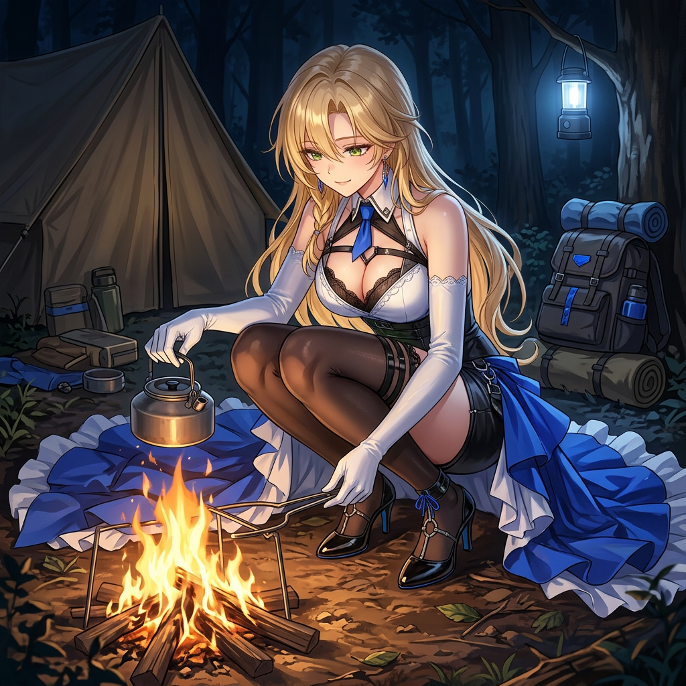
클릭해서 확대 보기
전투 사이, 생존을 위한 준비 단계.
자원을 정비하고 파티 상태를 회복하는 핵심 시스템.
날씨 · 계절 · 시간표 가이드
환경 시스템은 탐험의 흐름을 정리하는 보조 규칙입니다. 하루의 시간대, 현재 계절, 당일 날씨를 정해두면 채집, 농사, 낚시, 야영, 이동, 수색의 위험과 보상이 더 선명해집니다. 날씨와 계절은 판정 자체를 복잡하게 바꾸기보다, 어떤 활동이 유리하고 어떤 위험 이벤트가 등장하는지를 정하는 기준으로 사용합니다.
| 시간대 | 성격 | 주요 활용 |
|---|---|---|
| 새벽 05-08 | 기온 안정, 흔적 선명 | 추적, 채집 시작, 보초 교대 |
| 낮 08-17 | 시야 확보, 활동량 최대 | 이동, 농사, 거래, 제작 |
| 저녁 17-20 | 소문과 이동이 교차 | 시장 정보, 암거래, 야영 준비 |
| 밤 20-05 | 시야 저하, 위험 증가 | 잠입, 야영, 야행성 몬스터 |
| 활동 | 소요 | 메모 |
|---|---|---|
| 짧은 대화/구매 | 1시간 | 소문 수집, 상점 이용, 간단한 정비 |
| 구역 탐색 | 2시간 | 수색, 채집, 낚시, 주변 조사 |
| 제작/농사 작업 | 3시간 | 요리 대량 제작, 재봉, 단조, 밭 관리 |
| 장거리 이동 | 4시간 | 지역 이동, 날씨가 나쁘면 위험 이벤트 추가 |
| 야영/숙박 | 8시간 | 기존 회복 규칙과 함께 정산 |
약초와 어린 작물이 늘어납니다. 비가 잦아 채집 보상은 좋아지지만, 진흙길과 감기성 질환 이벤트가 발생하기 쉽습니다.
농작물 성장과 낚시가 활발합니다. 낮 활동이 길어지는 대신 폭염, 식수 부족, 음식 부패 이벤트를 함께 확인합니다.
수확과 사냥의 계절입니다. 식량 확보가 쉬워지고 시장 물자가 늘어나지만, 겨울을 앞둔 약탈자와 짐승 출몰이 증가합니다.
채집과 이동이 어려워집니다. 음식 보존은 쉬워지지만 한파, 동상, 눈길 조난, 야영 난이도 상승을 적용합니다.
하루가 시작될 때 1d12로 날씨를 정합니다. 지역의 성격에 맞춰 결과를 위아래로 1칸 조정해도 됩니다.
| 1d12 | 날씨 | 태그 | 효과 |
|---|---|---|---|
| 1 | 맑음 | 안정 | 시야가 좋습니다. 이동, 수색, 원거리 행동을 정상 진행합니다. |
| 2 | 흐림 | 안정 | 기온 변화가 적습니다. 긴 이동과 노동에 적합합니다. |
| 3 | 약한 비 | 불리 | 약초 채집 단서가 늘지만, 장비 젖음과 진흙길 이벤트가 추가됩니다. |
| 4 | 폭우 | 위험 | 이동, 야영, 수색이 불안정해집니다. 강, 늪, 절벽 주변 위험 이벤트를 우선합니다. |
| 5 | 안개 | 불리 | 원거리 전투와 길 찾기가 어려워집니다. 잠입과 은신에는 유리한 상황을 줄 수 있습니다. |
| 6 | 강풍 | 불리 | 화살, 투척, 모닥불, 천막 설치에 문제가 생깁니다. 고지대 이동 위험이 증가합니다. |
| 7 | 폭염 | 위험 | 낮 시간 장시간 행동 후 SP 소모나 탈수 이벤트를 확인합니다. 밤 활동의 가치가 올라갑니다. |
| 8 | 한파 | 위험 | 야영과 장거리 이동이 위험해집니다. 방한 장비가 없으면 회복 효율이 낮아질 수 있습니다. |
| 9 | 눈 | 불리 | 흔적 추적은 쉬워지지만 이동 속도가 떨어집니다. 소리와 발자국이 노출됩니다. |
| 10 | 오염비 | 이변 | 타락 지역 전용 날씨입니다. 독, 광기, 변질 자원, 몬스터 난입 이벤트를 확인합니다. |
| 11 | 별빛 청명 | 특수 | 밤 시야가 안정됩니다. 지혜 판정, 마법 단서, 야간 수색 이벤트에 보너스 상황을 줄 수 있습니다. |
| 12 | 기상이변 | 이변 | 지역 고유 사건을 발생시킵니다. 붉은 달, 검은 눈, 역류하는 비 같은 장면을 사용합니다. |
안정 날씨는 추가 효과가 없습니다. 불리 날씨는 실패했을 때 작은 문제를 붙이고, 위험 날씨는 실패했을 때 상태이상, 자원 손실, 조우 중 하나를 적용합니다. 이변 날씨는 지역 고유 사건으로 취급합니다.
채집은 계절 자원과 날씨 태그를 보고 결과물을 고릅니다. 농사는 계절과 폭염/한파를 반영합니다. 야영은 밤 시간대와 당일 날씨를 기준으로 보초, 회복, 기습 위험을 정산합니다.
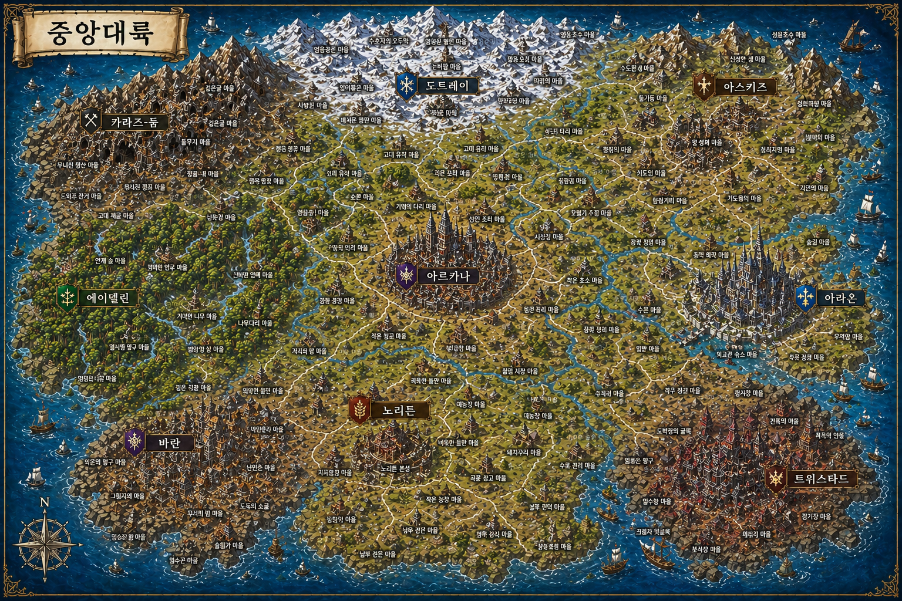
중앙 대륙 - 모험가들의 땅
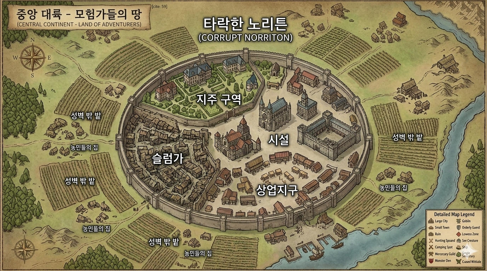
지식의 도시라고 알려진 이터널 아르카나.
하지만 과거의 대사건으로 인해 무너졌고, 현재는 중앙 대륙의 중심지라는 요충지 덕분에 수많은 사람들이 몰려드는 도시가 되었습니다.
지금은 첫 모험의 도시라고 불리기도 하며, 마탑은 존재하지 않습니다.
수많은 용병들이 하루하루를 살아남기 위해 경쟁하는 혼란스러운 장소입니다.
전투 판정 및 행동 가이드
전투의 기본 흐름, 판정 방식, 공격자와 방어자의 선언 순서를 정리합니다.
Detail Catalog
전투는 유저의 판단 하에 시작될 수 있습니다. 플레이어가 적대적인 행동을 선언하거나, 상황을 더 이상 대화와 탐색으로 해결할 수 없다고 판단할 때 전투가 개시됩니다. 반대로 적대적인 유닛이 먼저 공격 의사를 드러내거나, 매복과 습격처럼 선제 행동을 취하는 경우에도 전투가 시작됩니다.
전투가 시작되면 참여한 모든 캐릭터와 유닛은 기본적으로 속도 순서대로 턴을 진행합니다. 속도가 높은 대상부터 행동하며, 같은 속도일 경우 상황에 맞는 보조 판정이나 진행자의 판단으로 순서를 정합니다.
기습이 성립한 경우, 첫 1턴에 한해 기습자가 선공합니다. 이때 피습자의 턴은 모두 후발로 밀리며, 기습자의 행동이 먼저 처리된 뒤 남은 유닛들이 순서를 이어갑니다. 기습 효과는 첫 1턴에만 적용되며, 2턴부터는 다시 기본 속도 순서대로 전투를 진행합니다.
칼날과 주먹이 닿는 거리에서의 강력하고 안정적인 타격.
거리와 각도를 이용해 안전하게 누적하는 정밀한 공격.
마력과 원소를 활용해 방어의 허점을 노리는 비물리 타격.
직접 접촉하거나 근접 무기를 통해 발생하는 물리 피해입니다.
주로 힘 기반 판정과 연결되며, 방패와 방어구의 영향을 크게 받습니다.
활, 석궁, 투척 무기, 총기처럼 거리를 두고 가하는 피해입니다.
주로 정밀 기반 명중 판정과 연결되며, 거리와 탄약 관리가 중요합니다.
마력, 주문, 저주, 원소 효과 등을 통해 발생하는 비물리 피해입니다.
주로 지능 기반 판정과 연결되며, 일반 방어구의 영향을 적게 받을 수 있습니다.
"오는 공격을 정면으로 마주하고 버텨내기"
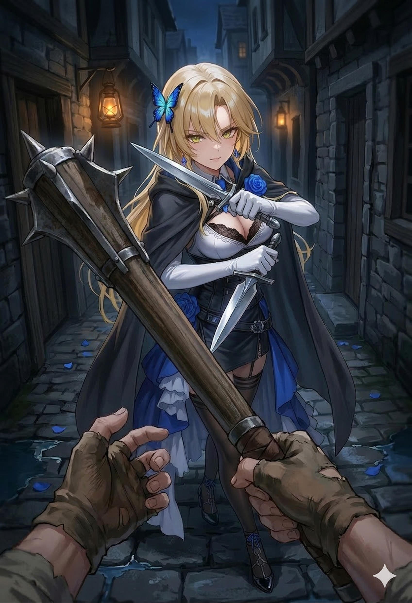
A: 방어 준비 (Guard)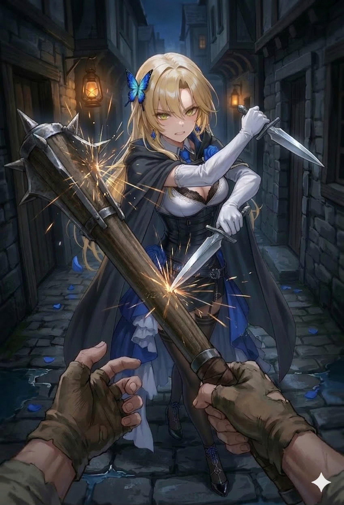
"적의 공격은 막아냈지만, 주변의 위험 요소가 잔류 피해를 주는 상황입니다."
Damage Calculation
최종 피해 = 외부 요인 - 방어값 - 고정 방어
"적의 공격이 방어벽을 뚫고 직접적인 타격을 입힌 상황입니다."
Damage Calculation
최종 피해 = (공격값 ± 외부 요인) - 고정 방어
가장 기본적인 대응입니다. 충격을 받아내거나 기술로 상쇄합니다.
공격자가 위력만 제시할 때입니다. 방어자는 자신의 대응 방법을 골라 서술합니다. 그 행동에 어울리는 판정 스탯으로 선택되어 판정합니다. 본인의 강점을 가장 잘 활용할 수 있는 상태입니다.
공격자가 특정 스탯(예: 힘)을 요구하며 들어올 때입니다. 방어자는 반드시 해당 스탯으로만 맞서야 합니다. 본인의 약점 스탯을 공략당할 수 있어 주의가 필요합니다.
보유한 전용 스킬로 대응하는 방식입니다. 공격자가 요구한 판정 형식을 무시하고, 스킬에 명시된 스탯으로 판정 규칙을 대체합니다. (예: 속박 공격을 속도 기반 '되치기' 스킬로 가드)
"공격의 궤적을 읽고 찰나의 순간에 벗어나기"
Attacker
보통 능력치 판정
Defender
속도 (Speed)
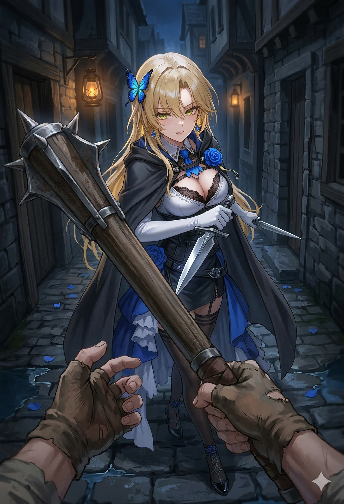
A: 회피 시도 (Dodge)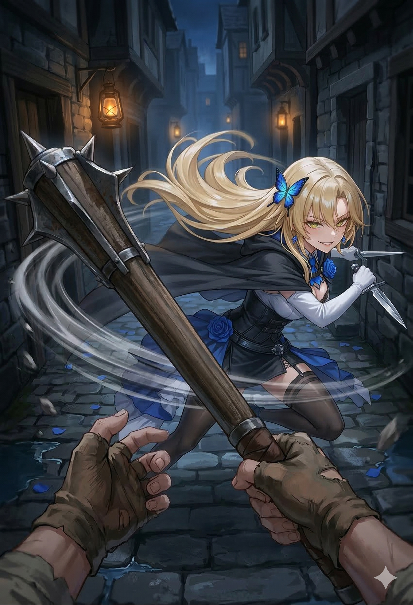
Damage Calculation
최종 피해 = 0
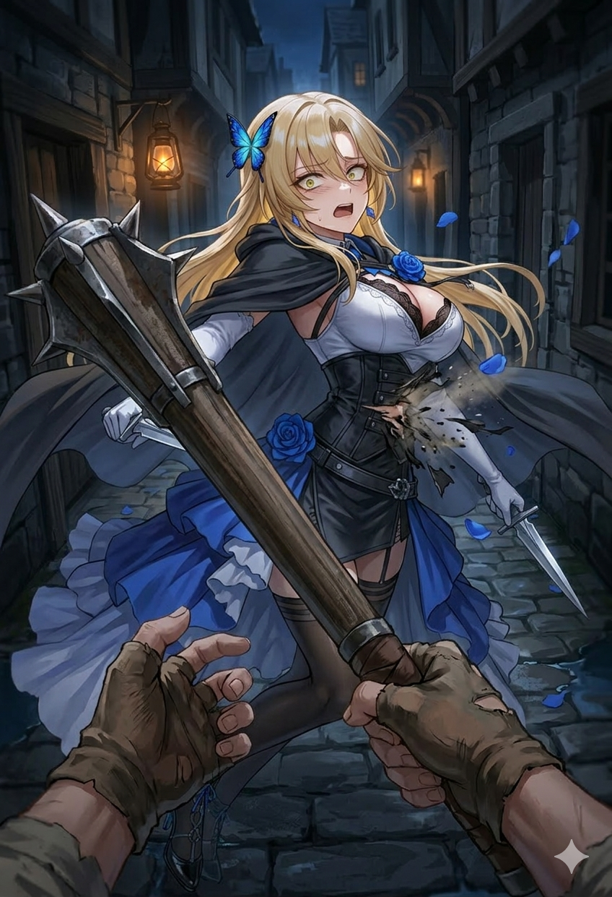
Damage Calculation
최종 피해 = 100% (감소 없음) + 패널티
회피 동작 중 균형을 잃습니다. 다음 턴 모든 방어/회피 판정에 불리한 보정을 받습니다.
적에게 결정적인 빈틈을 보입니다. 다음 피격 시 주사위 결과와 무관하게 무조건 치명타로 적중합니다.
GM의 재량에 따라 주변 환경(지형지물)이나 공격의 성격에 맞는 추가적인 패널티를 부여합니다.
"살을 내주고 뼈를 깎는, 단 한 번의 승부수"
"적의 칼날이 내 어깨를 파고드는 순간, 나는 방패를 버리고 그자의 목에 단검을 꽂아 넣습니다."
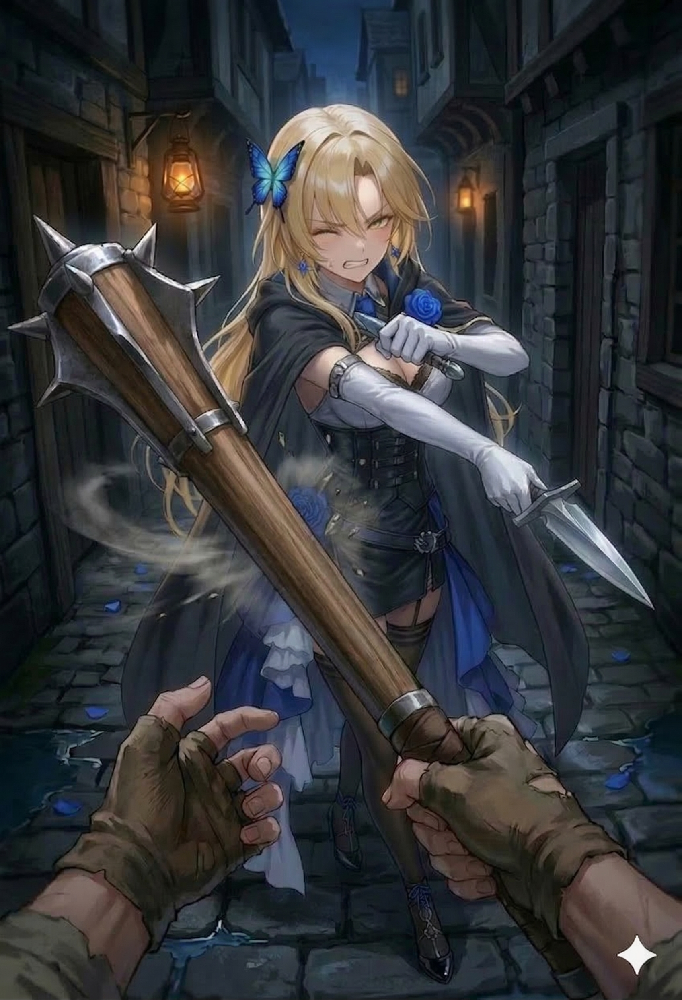
Trade-off Protocol
공격자가 주사위를 굴려 위력을 결정한 직후 선언합니다. 방어자는 어떠한 판정 주사위도 굴리지 않으며, 상대의 공격 결과를 **고스란히 몸으로 받아냅니다.**
적의 대미지 계산이 종료됨과 동시에 방어자의 **[표준 공격 액션]**이 즉시 시작됩니다. 이는 적의 공격 시퀀스가 완전히 끝나기 전에 개입하는 강제적인 공격권 탈취입니다.
※ 반격 시 적은 자신의 공격 직후이므로 대응(방어/회피)에 심각한 제약을 받을 수 있습니다.
상태이상 하위 카탈로그
누적되는 상태이상
성적 공격 당할 시 스택이 쌓입니다. 스택이 최대 건강 수치까지 쌓일 경우 절정에 이릅니다. 최대 임계점에 도달하면 탈진 상태가 됩니다.
발현(임계점) 절정: 행동 불가가 됩니다.
강화 발현(최대 임계점) 탈진: 절정 효과에 더해 해제 후 다음 1턴 동안 모든 판정 -3을 받습니다.
해제: 매턴 주사위(현재 건강)를 굴려 합계 값이 최대 건강 이상으로 나오면 해제됩니다.
광기 스택이 최대 지혜까지 중첩 된 경우 광란에 빠집니다. 최대 임계점에 도달하면 완전 광란에 빠집니다.
발현(임계점) 광란: 아군,적군 구별 없이 랜덤으로 지목합니다.
강화 발현(최대 임계점) 완전 광란: 근접 대상(아군 우선)에게 공격 또는 방해 행동을 수행합니다.
해제: 매턴 주사위(현재 지혜)를 굴려 합계 값이 최대 지혜 이상으로 나오면 해제됩니다.
두려움 스택이 최대 지혜까지 중첩 된 경우 공포에 빠집니다. 최대 임계점에 도달하면 패닉 상태가 됩니다.
발현(임계점) 공포: 적에게서 멀어집니다. 원거리였을 경우 전투 이탈 됩니다.
강화 발현(최대 임계점) 패닉: 즉시 후퇴 행동을 우선하며, 원거리 상태라면 전투 이탈을 시도합니다.
해제: 부여한 적에게 공격 당하지 않을 시 해제 됩니다.
최음 등 특정 효과에 쌓이면 스택이 쌓입니다. 최대 지혜까지 중첩된 경우 욕정 상태가 됩니다. 최대 임계점에 도달하면 도취 상태가 됩니다.
발현(임계점) 욕정: 적의 성행위에 저항 불가.
강화 발현(최대 임계점) 도취: 욕정 효과에 더해 이번 턴 공격/방어보다 욕정 원인에게 접근하거나 반응하는 행동을 우선합니다.
해제: 매턴 주사위(현재 지혜)를 굴려 합계 값이 최대 지혜 이상으로 나오면 해제됩니다.
어지럼증 관련 스택이 최대 정밀 만큼 쌓이면 혼란 상태가 됩니다. 최대 임계점에 도달하면 방향감각 상실 상태가 됩니다.
발현(임계점) 혼란: 정밀 결과값이 절반으로 떨어집니다.
강화 발현(최대 임계점) 방향감각 상실: 혼란 효과에 더해 대상 지정이 필요한 행동의 판정 실패 시 목표가 무작위로 변경됩니다.
해제: 매턴 주사위(현재 정밀)를 굴려 합계 값이 최대 정밀 이상으로 나오면 해제됩니다.
오물이나 구토물 등이 몸에 묻을 때 스택이 쌓입니다. 최대 매력 수치만큼 쌓이면 혐오대상자가 됩니다. 최대 임계점에 도달하면 오염원 상태가 됩니다.
발현(임계점) 혐오대상자: 아군이 무시하고 적군이 우선적으로 공격합니다.
강화 발현(최대 임계점) 오염원: 혐오대상자 효과에 더해 인접한 아군의 건강/매력 관련 판정 -3을 유발합니다.
해제: 청결(세척) 시 해제됩니다.
턴 시작 시 독 스택만큼 피해를 받고, 그 후 독 스택이 1 감소합니다. 중첩이 가능합니다.
해제: 해독제로 감소 폭을 늘이거나 해제할 수 있습니다.
턴 시작 시 출혈 스택만큼 피해를 입습니다. 중첩이 가능하며 자연 감소하지 않습니다.
해제: 붕대 사용 또는 회복 마법 시 감소 또는 해제 됩니다.
스택 없이 즉시 적용되는 상태이상
발생 환경: 독성 음식, 강한 악취, 혐오스러운 광경, 내장 충격, 특정 몬스터의 악취 공격
효과: 이번 턴 행동을 상실하며, 복용 중인 아이템 효과를 상실합니다.
해제: 즉시 처리 후 종료됩니다.
발생 환경: 점액 피격, 끈적한 함정, 접착성 투척물, 점성 마법
효과: 턴 우선순위가 꼴찌로 고정되고, 속도 판정 -3을 받습니다.
해제: 점액을 닦아내는 행동을 2회 수행하면 해제됩니다.
발생 환경: 강한 충격, 낙하, 급소 타격, 압도적인 물리 피해
효과: 1턴 동안 행동/반응 불가, 피격 시 방어 판정 불가
해제: 다음 자기 턴 시작 시 해제됩니다.
발생 환경: 손, 손목, 무기, 방패를 노리는 전투 상황
효과: 장착 무기 1개를 떨어뜨림, 무기 사용 불가
해제: 행동 1회로 회수합니다.
발생 환경: 밀치기, 폭발, 다리 걸기, 지형 붕괴, 균형 상실
효과: 이동 불가, 근접 공격 받을 때 방어 결과값 -3
해제: 이동 행동 1회로 일어납니다.
발생 환경: 입막음, 목 조르기, 음파 차단, 마법 봉쇄
효과: 주문, 외침, 지휘 행동 불가
해제: 유지 턴 경과 시 해제됩니다. 또는 매턴 자신의 지능 다이스를 굴려 결과값 합계가 상대의 지능 스탯 이상이면 해제됩니다.
발생 환경: 눈 공격, 섬광, 모래, 연기, 어둠, 시야 교란
효과: 명중 판정 -5, 원거리 공격 불가
해제: 지속 유지 턴 경과 시 해제됩니다.
발생 환경: 폭음, 충격파, 음파 공격, 근거리 폭발
효과: 기습 감지 -5, 아군 지휘/명령 효과 받지 못함
해제: 2턴 지속 후 해제됩니다.
발생 환경: 그물, 사슬, 덩굴, 포획 장치, 끈적한 구속물
효과: 이동 불가, 속도 판정 -5, 회피 불가
해제: 물리 속박은 상대와 힘 다이스 결과를 비교합니다. 마법 속박은 속박시킨 상대의 지능 다이스 결과값보다 자신의 힘 다이스 결과값이 높으면 해제됩니다.
발생 환경: 조롱, 위협, 심리전, 주의 끌기, 감정 자극
효과: 대상의 다음 공격 대상이 도발자로 고정됩니다. 공격이 불가능한 경우 도발자에게 접근하거나 도발자를 방해하는 행동을 우선합니다.
해제: 대상은 자신의 턴 시작 시 지혜 다이스를 굴립니다. 결과값 합계가 도발자의 지혜 스탯 이상이면 도발을 해제하고 자유롭게 행동합니다. 실패하면 이번 턴 공격 대상은 도발자로 고정됩니다.
발생 환경: 전격, 신경독, 마비 마법, 신경계 교란
효과: 반응 행동 불가, 다음 행동 판정 -5
해제: 자기 턴 종료 시 건강 판정 14 성공 시 해제됩니다.
발생 환경: 강한 충격, 방패 가격, 둔기 타격, 자세 붕괴
효과: 다음 방어/회피 판정 -3, 반응 행동 1회 사용 불가
해제: 다음 자기 턴 시작 시 해제됩니다.